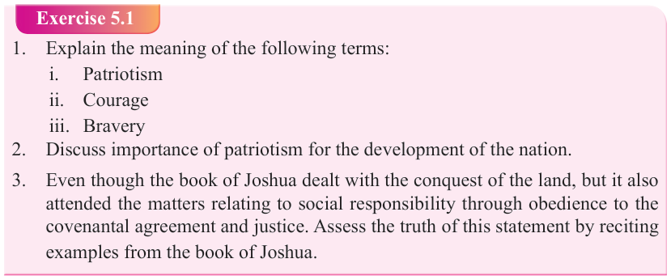

Form Two
Tanzania Institute of Education (TIE)

Bible Knowledge
65

(1) Helps leaders to make heroic and virtuous decisions for the benefit of their people.
(2) Bravery is important for leaders because it helps them to stand firm in areas that are dangerous and contesting. (3) For citizens, bravery enables them to defend their nation, take initiatives to work for the development of the nation and pay taxes. (3)
Bravery is important for each individual’s life because it helps the person to trust in God and stand firm in faith, and it aids the person to work hard and take risk for personal development, and it enables the person to endure in difficult situation and danger. (4) Furthermore, bravery supports the person to accept rejection and failures as a lesson and not a defeat. (5) Additionally, bravery helps the person to trust on oneself and defend one’s own ideas, life and the life of others. (6) Besides, bravery makes the person avoid dangers of life and live a moral life. It helps one to take risk to achieve a high good (Josh 1:1-9).
Exercise 5.1
1. Explain the meaning of the following terms: i.
Patriotism
ii. Courage iii. Bravery


2. Discuss importance of patriotism for the development of the nation.

3. Even though the book of Joshua dealt with the conquest of the land, but it also attended the matters relating to social responsibility through obedience to the covenantal agreement and justice. Assess the truth of this statement by reciting examples from the book of Joshua.
The importance of humility

Humility is a quality of having a modest view of one’s importance. In the Bible, humility is described as meekness, lowliness, and absence of self. Humility is an internal attitude of the person, not merely an outward manifestation of one’s behaviour.
It is indeed an attitude of spiritual modesty that comes from understanding our place in the larger order of things. It does not entail taking our desires, successes, or failing too seriously (Joshua 1:7-9;13; 19:49-51). The word humility appears several times throughout the Bible. Wherever we read about humility in the Bible, we see that this trait is something God desires for His people. Humility is beneficial for us, for God, and for those around us. St. Paul teaches us that “do nothing out of selfish ambition or vain conceit, rather in humility value others above yourself” (Philippians 2:3).
Jesus taught that “blessed are the poor in spirit, for theirs is the kingdom of heaven.”
The poor in spirit are those who are humble (Mathew 5:3).